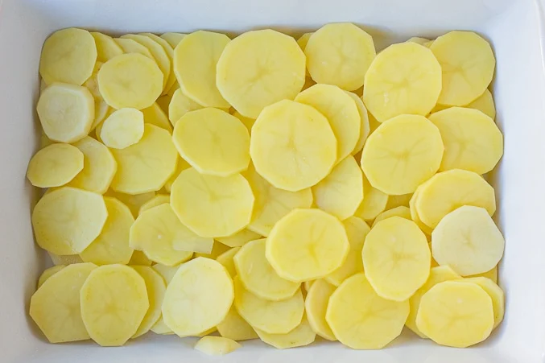
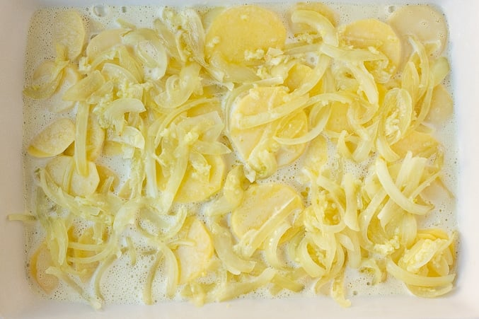
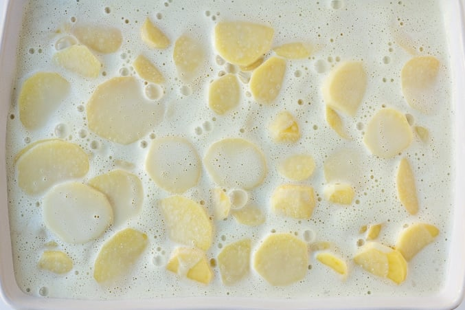

Vegan Scalloped Potatoes
My favorite recipe for vegan scalloped potatoes- ultra creamy, cheesy, garlicky and comforting. Absolutely NO
dairy!
Ingredients
- 4 pounds yukon gold potatoes
- 1 1/2 cups raw cashews, soaked in hot water for 5 minutes
- 2 cups vegetable broth
- 2 cups unsweetened non-dairy milk (I used coconut milk)
- 1 1/2 teaspoons salt
- 1/2 cup canola oil
- 1/4 cup soy milk
For the creamy sauce
- 1 tablespoon olive oil
- 1 large onion, thinly sliced
- 4 large garlic cloves, minced
- Optional for serving: vegan parmesan, chopped fresh chives
Instructions
- Peel your potatoes, and slice them into 1/8 inch thick rounds. Preheat the oven to 400 degrees F and lightly
grease a 9 x 13 inch baking dish. Set aside.
- Make the creamy sauce: Drain the cashews. In a high powered blender like a Vitamix, add all the sauce
ingredients (cashews, vegetable broth, non-dairy milk, nutritional yeast and salt) and blend on high for a few
minutes until very smooth.
- Heat the olive oil in a large saute pan over medium heat. Add the sliced onion and saute for 3-4 minutes,
until translucent. Now add the garlic to the pan and cook, stirring constantly for another minute. Turn off
heat and set aside.
- Spread half of the sliced potatoes in the baking dish. Top evenly with half of the creamy sauce, and then add
the onion/garlic mixture across the top of the sauce.
- Layer the rest of the potatoes, and then the rest of the sauce. Bake for 60 minutes, then check a few potatoes
to make sure they are fork tender and cooked through. If not, put back in the oven for 10-20 more minutes,
until done. The sauce should be bubbly and thick.
- Sprinkle vegan parmesan and chopped fresh chives on top, if desired and serve. Enjoy!
Oh vegan scalloped potatoes, where have you been all my life?
Not to toot my own horn or anything, but I nailed it with this recipe! Sometimes (ok, often...) I have
complete
recipe testing failures. I try, I fail, I try, I fail again, and hopefully get it after several tries. But with
these
scalloped potatoes, oh my word, they were amazing from the start!
These potatoes are SO creamy, garlicky, flavorful and over-the-top delicious. The epitome of comfort food,
and a must
have at any holiday meal! They will be gone so fast, and no one will guess they are vegan.
How Do You Make Vegan Scalloped Potatoes?
- First, peel and slice your potatoes about 1/8 inch thick. Preheat the oven to 400 degrees F.
- Make your creamy sauce in a high powered blender like a Vitamix (raw, soaked cashews, vegetable broth,
unsweetened non-dairy milk, nutritional yeast, and salt).
- Sauté an onion, thinly sliced and some garlic.
- Now, layer half the potatoes in a 9 x 13 inch greased baking dish.

- Pour half of the sauce on top. It will be very watery at this point, which is fine. It will thicken up as the
potatoes bake. Spread the onion/garlic mixture on top.

- Add the rest of the potatoes, and pour the rest of the sauce on top. It will look like this before you put it
in the oven.

- Bake, uncovered for 60 minutes, then remove from the oven and check for doneness. The sauce should be bubbly
and
thick, and the potatoes should be fork tender. If not, bake a little longer, 10-20 more minutes. Then, sprinkle
with vegan parmesan and fresh chopped chives, if desired and serve warm!
Tips
Times
Prep: 30 minutes
Cook: 1 hour
Total: 1 hour 30 minutes
Servings: 12 servings
Can I make vegan scalloped potatoes ahead of time?
Yes, you can. Simply make the potatoes as instructed and let cool completely to room temperature. Cover tightly
and
refrigerate 2-3 days. I wouldn't go longer than that. When ready to serve, bake at 350 degrees for 30-40 minutes
until warmed through.
Notes
- May leave out the onions and garlic if desired, but they add a lot of flavor to the dish.
- I like using yukon gold potatoes in this recipe, but russets will work as well. Or try sweet potatoes for
variety!
- Try to slice your potatoes similar levels of thickness; this will help them cook more evenly. If you slice
your
potatoes thicker, they will take longer to cook, so keep this in mind.
Nutrition
Serving: 1serving
Calories: 295kcal
Carbohydrates: 29g
Protein: 9g
Fat: 18g
Saturated Fat: 10g
Sodium: 471mg
Potassium: 895mg
Fiber: 6g
Sugar: 3g
Vitamin A: 83IU
Vitamin C: 20mg
Calcium: 62mg
Iron: 7mg
*PLEASE NOTE THIS PAGE DOES CONTAIN AFFILIATE LINKS. I ONLY LINK TO PRODUCTS I ABSOLUTELY LOVE AND
RECOMMEND.
THANK YOU FOR YOUR SUPPORT. Read my full
disclosure
here.